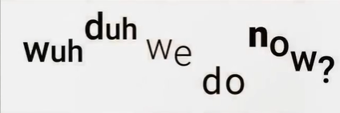

【1. American Intonation】语调
注意pitch音调，voice音强，length音长，pace速度
1.1 Stress重音
常常给content word( nouns, verbs, adjectives, adverbs )以重音强调，而function word不作重音强调。
所谓强调，是指主要元音（vowel）延长，并提高音调。
不强调的部分，声音减弱去说出来，软化辅音，减少元音的发音强度，用更少的精力去说出来。
1.2 Melody旋律
content word的发音音调更高，声音更大. when words are stressed, they are louder, and also higher in pitch.
合适的melody不是每个词音调都一样，也不是一个词高一个词低。而是将content words强调出来后，如果后面是function words，开始逐渐降低，直到遇到下一个需要强调的词。

另外强调content words的同时，除了降低function words的音量、音调和音长，也可以将不重要的function words做一下特殊处理。
这种特殊处理是将元音变成一种特殊的低沉的音。发这种低沉的音需要略微下沉下巴，放松舌头和嘴唇，把舌头略微下压，发出类似于“饿”的音。这种特殊的低沉的音实际是把原来功能词中的元音简化了，称作schwa即弱中央元音，音标表现为倒置的e（about的第一个音）。
经过这样的特殊处理后再加上连读，这些function words就成功地被弱化了。
1.3 Rhythm节奏
- content word的发音时间更长，并且速度更慢。
- rhythm is the result of your message. 同上例子，do的音长比前面5个function words的总长都长。
- 当出现多个content words时，强调的程度也会不一样。
- 长句或者两个句子，中间的停顿是节奏的关键部分。


【2. Connected speech】连读
- 每个句子由单元块组成，每个单元内部都是紧密连接的，听起来像是一个单词；每个单元之间彼此分开。
- 单元内部连续不换气，单元之间有停顿换气。
2.1 Connection between words in the unit
元音（vowel）和辅音（consonant）组合出来，有四种前后单词的连接组合：
2.1.1 vowel+consonant
1play fair读作plei-f2see them
2.1.2 consonant+consonant
前后为同一个辅音时，前一个不发音，后一个发音，听起来像一个（长）辅音。
1cheap prices读作chea-prices2big gate读作bi-gate3gas station读作ga-sstation前后为不同辅音时，前后辅音之间不要换气呼吸，直接连读，听起来像一个单词的两个音节。
1bar crawl读作barkrawl2mixed nuts读作mikstnuts3hash reality读作har-shree-a-ldee4wine glass读作wai-nglass当前一个以t结尾，后一个以y开头，将产生ch的发音。
1can't you读作can-chyl;;l;ou2won't you读作wown-chyou3get your读作ge-chy'r当前一个以d结尾，后一个以y开头，将产生dj的发音。
1did you读作di-djuw2hide your读作hai-dj'r
2.1.3 consonant+vowel *
- 第一个单词的辅音结尾作为下一个单词的开头。
- 如果需要强调第一个单词，那么只强调去掉结尾辅音的部分。
连读最重要的部分。
1work ethics读作wor-kethics2finish it读作fini-shit3what about it读作whuh-duh-baw-d't4one mile away读作one-mai-laway5out of读作aduh
2.1.4 vowel+vowel
同一个元音，则把他们直接连读成一个（长）元音即可。
1we each读作weeeeech2law office读作lawwwfis当第一个元音结尾是u或o而下一个开头是元音时，会产生w的辅音发音。
1you always读作yuw-(w)aa-ways2who is it读作who-wi-zit3go about读作go-(w)a-bawt当第一个元音结尾是e，会产生y的辅音发音。
1see it读作see-(y)it2she always读作shee-(y)aa-ways3she already读作shee-(y)aa-ready4we are here读作wee-(y)ar-here
【3. Varied pitch】语调中多样化音调
音高：高音调和低音调。
- 强调的部分用高音调。
- 每个单词前后有音调变化的起伏。
【4. 谷歌语音助手】分析美语语调
4.1 rising-rising intonation
开始发言时，开头语调需要低-高-低的滑动波浪式变化，中间最高，结尾有一个降低的小尾巴，表示后面有后续。
1这样说hi的时候，表达非常友好的语气。开始陈述（问题）/ 征求许可/ 告知新事物的时候，常常会出现高音调。不一定是最开头的单词，也可能是比较靠前的需要强调的单词。
1I'm CALLING to book a ...2从I开始上升到calling为最高，book也要强调但是略微下降。一句话结尾会有上升的语调，常常表示后面还有事情没有说完，或者说我在等待回复，开放的结尾留出了充分的答案空间。即使不是需要答复的问题式的场景，结尾升调也非常常见，这是非常常见的美语表达方式，比常规的平坦的结尾语气更加自然。
1I'm CALLING to book a women's haircut for a CLIENT.2结尾client有上升音调，因为还没有讲完。3I'm LOOKING for something on MAY 3RD.4同上，开头有升调，结尾也是升调。真正结尾常常有语调下降，表明自己的表述已经完成了，falling intonation表达的语调更加确定和自信。
4.2 Extra words and extra sounds
Mm-hmm，hmm，aah这种常见的语气词（extra sound），同样有滑动变化的模式化语调，先升后降，最后再略微升调结尾。另外还有just，for now，well这种填充词（filter word），都会使得表述更加自然，更加友好礼貌。
4.3 Phrases and pauses分段和停顿
- 除了句子之间停顿之外，需要停顿的句子中间的地方，也稍作停顿，预留时间给自己和听话人休息。
【5. Long words】长单词的重音
增加后缀suffix常常会改变原来单词重音的位置。常常变到后缀的前一个音节处。举例如下。
-ility
1possibility /possiBI-l'dee/2activity /acTI-v'dee/3responsibility /responsiBI-l'dee/-ical
1alphabetical /alphaBE-d'k'l/2political /poLI-d'k'l/3psychological /psycho-LO-g'k'l/-logy
1biology /biO-l'gee/2technology /techNO-l'gee/-meter
1kilometer /kiLO-m'd'r/2parameter /pa-RA-m'd'r/
【6. Reduction】and,or,for,of的发音
这些功能词，常常被减弱、挤压甚至隐藏起来，以使得更重要的需要被强调的名词、动词等突出出来。
6.1 and
单独and发音
1/euhnd/当and出现在句中时，梅花音a变成了中性的倒e，并且发音中舍去了d的发音，因为n的发音更容易连接到后面其他单词的发音。
1/en/2bread and butter /breadn-butter/3boys and girls /boy-z'n-girls/4milk and sugar /milkn-shugr/
6.2 of
单独一个of
1/aav/ 注意o的发音同father，f的发音是v当of出现在句中，o发音变成倒e，f发音仍然是v
1box of apples /baak-suh-vapplz/2cup of coffee /kupuh kafee/这里of后面是辅音，直接省略了v的发音，同样的还有下面的3cup of tea /cupa tee/4bottle of water /bodula waadr/5out of here /adda heer/
6.3 for
单独for
1/fawr/ 发音同four当for位于句中需要被减弱时，发音类似fur，即o发倒e音
1It' for me /it's f'r me/
6.4 or
类似for。
单独or
1/awr/2No, I said 'cake OR wine', not 'cake and wine'.当or位于句中，o发音倒e
1coffee of tea /kaafeer tea/2black or white /blacker white/
【7. How to speak faster】总结
- 区分单词的轻重缓急
- 不重要的单词有缩略、简化的发音，从重变为轻，从长变为短
- 在减弱的部分，投入更少的力量，放轻松